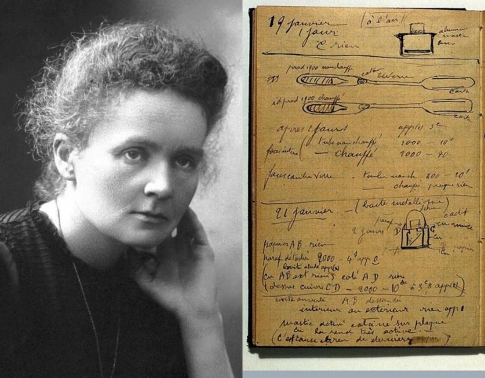
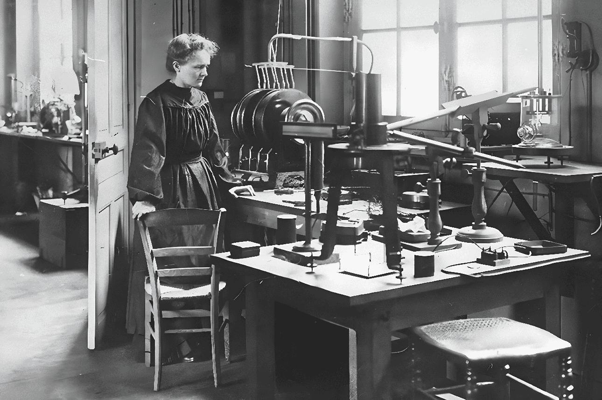

01Tinh thần tìm hiểu
Luôn đặt câu hỏi, quan sát cẩn thận và theo đuổi bằng chứng.
DI SẢN VÀ BÀI HỌC
Di sản của Marie Curie không chỉ là những công trình khoa học. Đó còn là tinh thần tìm hiểu, sự kiên trì và lời nhắc rằng kiến thức có ý nghĩa lớn nhất khi được phát triển bằng trách nhiệm.
 KHOA HỌC
KHOA HỌC
DI SẢN

01Luôn đặt câu hỏi, quan sát cẩn thận và theo đuổi bằng chứng.

02Kiên nhẫn làm việc qua nhiều năm và không để trở ngại quyết định giới hạn của bản thân.
 03
03
Đặt kiến thức trong mối liên hệ với những nhu cầu thực tế của con người.
BÀI HỌC CHO HỌC SINH
Đừng ngại hỏi “vì sao?” và tìm nguồn đáng tin cậy để kiểm chứng câu trả lời.
Kết quả tốt thường cần thời gian, luyện tập và sửa đổi sau mỗi lần chưa thành công.
Lắng nghe ý kiến khác, chia sẻ công việc và dựa trên dữ kiện khi đưa ra kết luận.
Học hỏi không chỉ để đạt điểm số mà còn để hiểu thế giới và đóng góp tích cực.
CẢM NHẬN CỦA THÀNH VIÊN
THÀNH VIÊN 01
Điều khiến em ấn tượng nhất ở Marie Curie là sự bền bỉ theo đuổi nghiên cứu trong hoàn cảnh còn nhiều khó khăn. Bà cho em thấy việc học không phải lúc nào cũng dễ dàng, nhưng sự tò mò và thói quen làm việc nghiêm túc có thể giúp chúng ta tiến bộ từng ngày. Trong học tập, em muốn rèn luyện cách tìm hiểu vấn đề đến cùng, không vội bỏ cuộc khi gặp bài khó và biết kiểm tra lại kết quả của mình.
THÀNH VIÊN 02
Em học được rằng thành tựu lớn không chỉ đến từ một khoảnh khắc mà là kết quả của quá trình tích lũy lâu dài. Em muốn áp dụng điều đó bằng cách lập kế hoạch học tập rõ ràng, chủ động hỏi khi chưa hiểu và hợp tác tốt hơn với các bạn trong dự án nhóm. Câu chuyện của Curie cũng nhắc em rằng tri thức cần đi cùng trách nhiệm, sự trung thực và thái độ tôn trọng bằng chứng.
CÂU HỎI ĐỂ LẠI
Hãy giữ sự tò mò, học cách kiên trì và dùng điều mình biết để tạo ra những giá trị tốt đẹp.
THÔNG ĐIỆP CỦA NHÓM